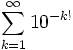
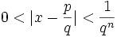

Transcendental Numbers
Transcendental Number
A Transcendental Number is any number that is not an Algebraic Number
Examples of transcendental numbers include π (Pi) and e (Euler's number).
Algebraic Number
What then is an Algebraic Number?
Put simply, when we have a polynomial equation like (for example)
2x2 − 4x + 3 = 0
whose coefficients (the numbers 2, −4 and 3) are rational (whole numbers or simple fractions) ...
... then x is Algebraic.
(Read Algebraic Numbers for full details).
We can imagine all kinds of polynomials:
- x − 1 = 0 has x = 1,
- x + 1 = 0 has x = −1,
- 2x − 1 = 0 has x = ½,
- x2 − 2 = 0 has x = √2,
- and so on
All integers, all rational numbers, some irrational numbers (such as √2) are Algebraic.
In fact it is hard to think of a number that is not Algebraic.
But they do exist! And lots of them!

They transcend the power of algebraic methods.
- Leonhard Euler
Liouville Numbers
Back in 1844, Joseph Liouville came up with this number:
|  | = 0.11000100000000000000000100…… |
| (the digit is 1 if it is k! places after the decimal, and 0 otherwise.) |
It is a very interesting number because:
- it is irrational, and
- it is not the root of any polynomial equation and so is not algebraic.
In fact, Joseph Liouville had successfully made the first provable Transcendental Number.
That number is now known as the Liouville Constant. and is in the class of Liouville Numbers.
More Transcendental Numbers
It took until 1873 for the first "non-constructed" number to be proved as transcendental when Charles Hermite proved that e (Euler's number) is transcendental.
Then in 1882, Ferdinand von Lindemann proved that π (pi) is transcendental.
In fact, proving that a number is Transcendental is quite difficult, even though they are known to be very common ...
Transcendental Numbers are Common
Most real numbers are transcendental. The argument for this is:
- The Algebraic Numbers are "countable" (put simply, the list of whole numbers is "countable", and we can arrange the algebraic numbers in a 1-to-1 manner with whole numbers, so they are also countable.)
- But the Real numbers are "Uncountable".
- And since a Real number is either Algebraic or Transcendental, the Transcendentals must be "Uncountable".
- So there are many more Transcendentals than Algebraics.
The same argument applies to complex numbers.
Transcendental Function
In a similar way that a Transcendental Number is "not algebraic", so a Transcendental Function is also "not algebraic".
More formally, a transcendental function is a function that cannot be constructed in a finite number of steps from the elementary functions and their inverses.
An example of a Transcendental Function is the sine function sin(x).
Q: Why didn't the mathematicians use their teeth?
A: They wanted to transcend dental functions.
Footnote: More about Liouville NumbersA Liouville Number is a special type of transcendental number which can be very closely approximated by rational numbers. More formally a Liouville Number is a real number x, with the property that, for any positive integer n, there exist integers p and q (with q>1) such that:  Now we know that x is irrational, so there will always be a difference between x and any p/q: so we get the "0<" part. But the second inequality shows us how small the difference is. In fact the inequality is saying "the number can be approximated infinitely close, but never quite getting there". In fact Liouville managed to show that if a number has a rapidly converging series of rational approximations then it is transcendental. Another interesting property is that for any positive integer n, there exist an infinite number of pairs of integers (p,q) obeying the above inequality. |